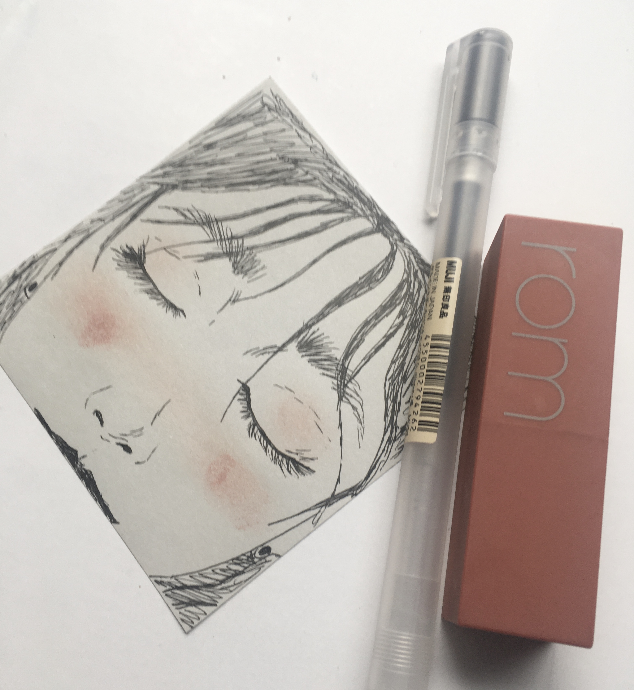
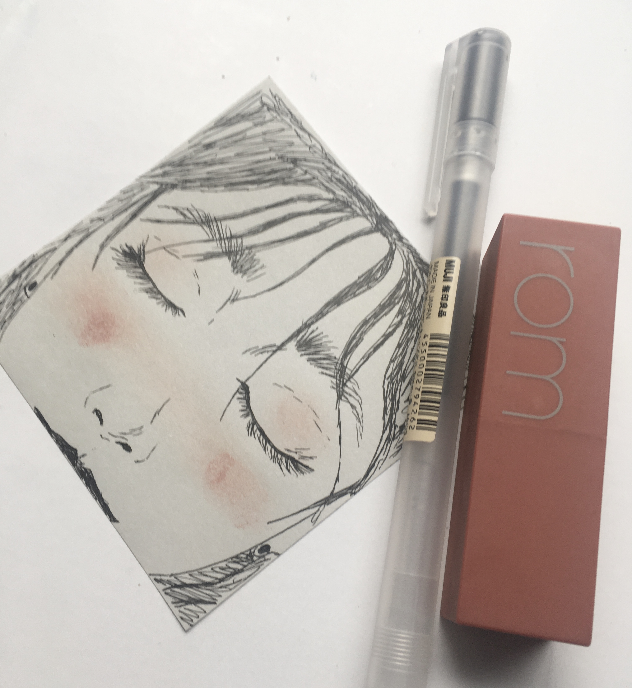
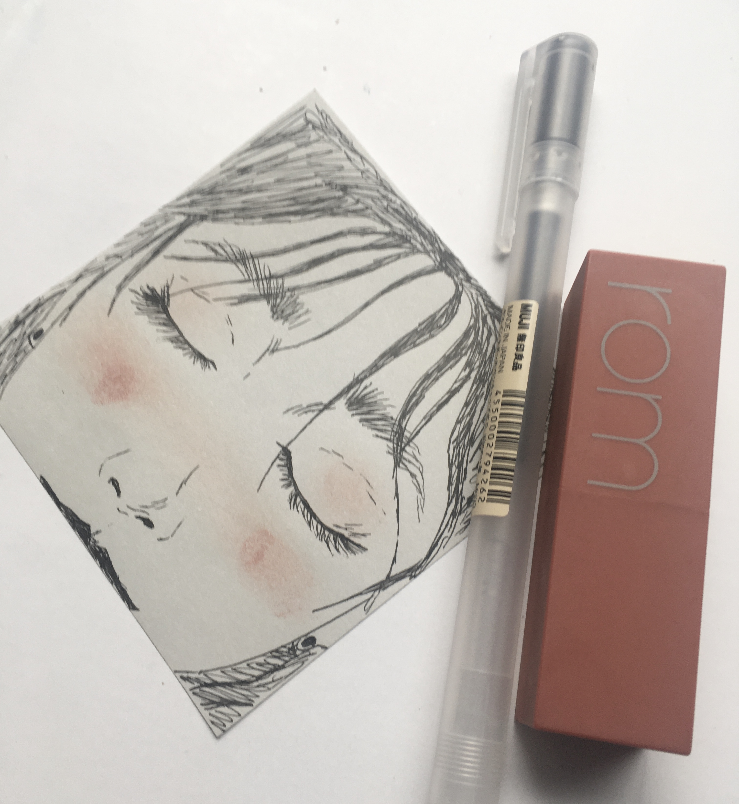

My name is Francezca Dagoc, I am a senior getting a bachelors in Management Information Systems at San Diego State University. Currently, I am working through my last year at State and am involved in Assosiation of Information Technology Professionals (AITP) and Child Family Development Student Organization (CFDSO). Previously, I was also involved in SDSU's Beta Alpha Psi (BAP) and was under the awards banquet committee until COVID-19 hit. Additionally, I worked as a District Attorney Student Assistant to assist the Family Protection and Elder Crimes unit until COVID-19 impacted my employment.
Originally, my intent when declaring MIS as my major was to make me be well in-tuned with the current software and systems that most businesses use. I went in knowing almost nothing about coding, software systems, computer, or networking besides my introduction to MIS class in freshman year. However, I stayed in MIS when I found out how compelling and inspiring the major was to me. Having seen people in this major pursue different careers in different sectors and finding a major where a broad spectrum of varying opportunities exist made me want to stick around. Having and working with various people in my major gives me a sneak peak into working with diverse environments in the future. In addition, MIS helped push me to go out of my comfort zone and do a lot of things that I never thought I could do before. With this experience, I hope that this may make me more adaptable to whatever work environment is given to me in the future.
As of lately, I have been really into analytical projects and studies in relation to ERP and process management. To me, I am all about researching, analyzing, and coming up with solutions to certain problems or weaknesses in a process. It gives me an insight into what can be done to improve something and make things efficient and effective for a certain system. I love piecing together solutions to a problem and working alongside with other people to find the best course of action.
I am very much into arts and design, I like to create a lot of things through drawing,painting, and calligraphy.I like art, it is a way for me to express myself and my own creativity in a different way. Though I may not be the best with art, I find that having an MIS degree can certainly help for future projects in regards to graphic and web designs. I plan on saving up money to buy current software to get in touch such as Adobe Illustrator and Adobe Photoshop. Here are a couple of my works!
